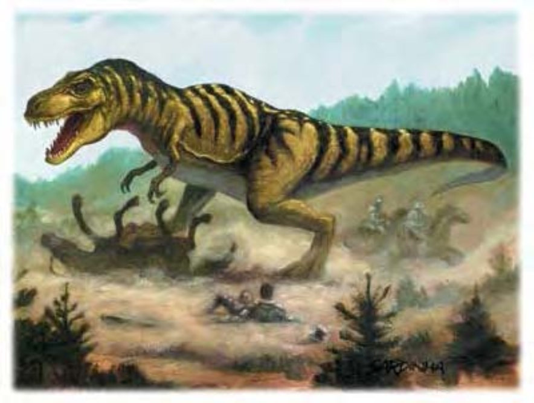

| 资料栏位 | 暴龙 (Tyrannosaurus) 超大型动物 |
| 生命骰 | 18d8+99（180HP） |
| 先攻 | +1 |
| 速度 | 40英尺（8格） |
| 防御等级 | 14（-2体型、+1敏捷、+5天生）、接触9、措手不及13 |
| 基本攻击/擒抱 | +13 / +30 |
| 攻击 | 啮咬+20近战（3d6+13） |
| 全力攻击 | 啮咬+20近战（3d6+13） |
| 占据/触及 | 15英尺 / 10英尺 |
| 特殊攻击 | 精通擒抱、生吞 |
| 特殊能力 | 昏暗视觉、灵敏嗅觉 |
| 豁免 | 强韧+16、反射+12、意志+8 |
| 属性 | 力量28、敏捷12、体质21、智力2、感知15、魅力10 |
| 技能 | 躲藏-2、聆听+14、侦察+14 |
| 专长 | 警觉、精通天生武器（啮咬）、健跑、健壮（3）、追踪 |
| 环境 | 热暖带平原 |
| 组织 | 单独或成双 |
| 挑战级数 | 8 |
| 宝藏 | 无 |
| 阵营 | 总是绝对中立 |
| 进化 | 19-36HD（超大型）；37-54HD（巨型） |
| 等级修正值 | ― |
高大的掠食者，头部巨大，嘴里长满匕首大小的利齿。该生物以两只强力后脚站立，前脚则退化。
所有肉食性恐龙中，以贪婪的暴龙最令人畏惧。
尽管体型巨大，重达6吨，暴龙仍是迅捷的跑者。其头部接近6英尺长，牙齿则介于3至6英寸长。鼻尖至尾巴比30英尺略长。
差不多牙齿咬得动的东西，暴龙都吃。暴龙花费许多时间搜寻腐肉或赶跑来抢食猎物的较小肉食性动物。
战斗暴龙追猎任何看到的生物。其战术简单，即冲刺及啮咬。
精通擒抱（特异）：当暴龙啮咬到体型小于自己的对手时，即可利用即时动作进行啮咬攻击（视为擒抱），且不会引发对方借机攻击。如果啮咬成功，则可定住对手，在次轮生吞对手。
生吞（特异）：如果对手的体型比暴龙小2级或更小，且被其咬住（见前述"精通擒抱"），则一旦暴龙通过擒抱检定，就可将对方生吞下去。
生吞之后，暴龙的胃每轮会造成对手2d8+8点敲击伤害及8点强酸伤害。被生吞的对手可试着用轻型穿刺或挥砍武器来打开一条生路，在对胃（AC=12）造成25点以上伤害后，可破开一道足以逃脱的缺口。一旦一个被生吞的生物逃脱，则肌肉运动会将这道缺口封起，其他被生吞的生物必须另行逃脱。
超大型暴龙的食道可容纳2个中型、8个小型、32个超小型或128个微型或更小的生物。
技能：暴龙在进行"聆听"、"侦察"检定时具有+2种族加值。